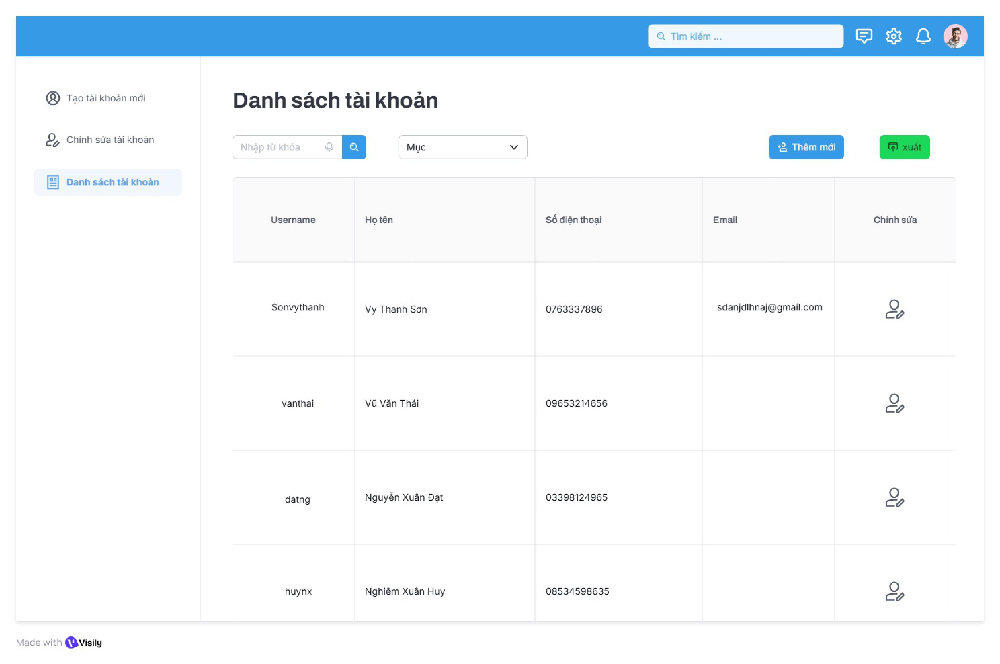
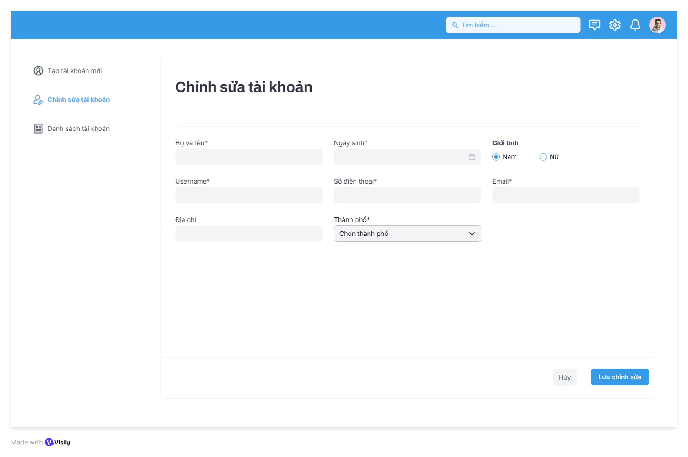
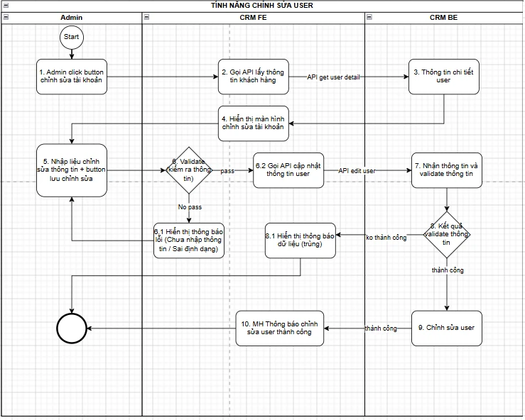

Mobile Sale — Edit User Feature Analysis
Business Analyst Trainee · SmartSotek Academy · Module: User Management
Overview
Sales-support mobile app for financial company loan officers. As a BA Trainee, I analyzed the Edit User feature end-to-end: screen flow, field-level specification, business process (BPMN), and the supporting API — from the initial user action all the way to FE/BE logic and the database.
1. Screen Flow
6 screens covering the main edit flow plus every validation/error state: success, missing required field, duplicate data, and invalid format.

Màn hình 1 — Danh sách tài khoản

Màn hình 2 — Chỉnh sửa tài khoản

Màn hình 3 — Thông báo thành công

Màn hình 4 — Lỗi bắt buộc nhập

Màn hình 5 — Lỗi thông tin trùng

Màn hình 6 — Lỗi sai định dạng
2. Screen Description (field-level spec)
Màn hình 1 — Danh sách tài khoản
| No | Hạng mục | Kiểu điều khiển | Kiểu dữ liệu | Bắt buộc | Min | Max | Giá trị khởi tạo | Mô tả |
|---|---|---|---|---|---|---|---|---|
| 1 | Từ khóa tìm kiếm | Textbox | Text | O | 0 | 255 | -- | |
| 2 | Nút tìm kiếm | Button | Icon | -- | -- | -- | -- | |
| 3 | Nút Thêm mới | Button | Icon | -- | -- | -- | Thêm mới | Điều hướng sang màn hình tạo mới tài khoản. |
| 4 | Nút Xuất | Button | Icon | -- | -- | -- | Xuất | Xuất danh sách tài khoản theo dữ liệu đang hiển thị hoặc theo điều kiện lọc hiện tại. |
| 5 | Bảng danh sách tài khoản | Table | Text | -- | -- | -- | ||
| 6 | Icon chỉnh sửa | Button | Icon | O | -- | -- | Tham chiếu đến màn hình 2 |
Màn hình 2 — Chỉnh sửa tài khoản
| No | Hạng mục | Kiểu điều khiển | Kiểu dữ liệu | Bắt buộc | Min | Max | Giá trị khởi tạo | Mô tả |
|---|---|---|---|---|---|---|---|---|
| 7 | Họ và tên | Textbox | Text | M | 1 | 150 | ||
| 8 | Ngày sinh | Date picker | Date | M | -- | -- | ||
| 9 | Giới tính | Radio button | Text | M | -- | -- | Nam/Nữ | |
| 10 | Username | Label | Text | -- | -- | -- | ||
| 11 | Số điện thoại | Textbox | Numeric | M | 10 | 10 | ||
| 12 | Textbox | M | 1 | 250 | Validate yêu cầu định dạng email | |||
| 13 | Địa chỉ | Textbox | Text | M | 1 | 250 | ||
| 14 | Thành phố | Combo box | Text | M | -- | -- | Lấy danh sách tỉnh/thành phố của VN | |
| 15 | Nút hủy | Button | -- | -- | -- | -- | Hủy | |
| 16 | Nút lưu chỉnh sửa | Button | -- | -- | -- | -- | Lưu chỉnh sửa | Tham chiếu logic xử lý |
Màn hình 3 — Thông báo thành công
| No | Hạng mục | Kiểu điều khiển | Kiểu dữ liệu | Mô tả |
|---|---|---|---|---|
| 17 | Icon thành công | Icon | -- | |
| 18 | Nội dung thông báo | Label | Text | Luồng xử lý thành công |
| 19 | Link quay về danh sách | Link | -- |
Màn hình 5 — Lỗi thông tin trùng
| No | Hạng mục | Kiểu điều khiển | Bắt buộc | Mô tả |
|---|---|---|---|---|
| 20 | Pop up thông báo | Pop up | -- | |
| 21 | Button Quay lại | Button | M | Quay về màn hình 1 danh sách tài khoản |
3. Business Process Flow (BPMN)
End-to-end process across 3 lanes — Admin, CRM FE, CRM BE — from clicking edit to the success confirmation screen.

| Bước | Thao tác | Thực hiện | Mô tả |
|---|---|---|---|
| 1 | Admin click button chỉnh sửa tài khoản | Admin | |
| 2 | Gọi API lấy thông tin khách hàng | CRM FE | CRM FE gọi API get user detail xuống CRM BE: chuyển sang bước 3 |
| 3 | Nhận request và lấy thông tin khách hàng | CRM BE | CRM BE nhận request lấy thông tin khách hàng từ CRM FE và lấy hết thông tin trên database: Họ và tên, Ngày sinh, Giới tính, Username, Số điện thoại, Email, Địa chỉ, Thành phố. |
| 4 | Hiển thị màn hình chỉnh sửa tài khoản | CRM FE | |
| 5 | Nhập liệu chỉnh sửa thông tin + button lưu chỉnh sửa | Admin | |
| 6 | Validate thông tin | CRM FE | Validate các trường bắt buộc + định dạng như mô tả Màn hình 2. Pass → bước 6.2. Không pass → bước 6.1. |
| 6.1 | Hiển thị thông báo lỗi | CRM FE | Thiếu trường bắt buộc: “Vui lòng nhập_Tên trường”. Sai định dạng: “Tên trường_không đúng định dạng”. Cho phép quay lại bước 5. |
| 6.2 | Gọi API cập nhật thông tin user | CRM FE | CRM FE gọi API edit user xuống CRM BE: chuyển sang bước 7 |
| 7 | Nhận thông tin và validate thông tin | CRM BE | Validate nghiệp vụ + kiểm tra dữ liệu trên database: username, số điện thoại, email đã được dùng bởi user khác chưa. |
| 8 | Kết quả validate thông tin | CRM BE | Không thành công (trùng/không hợp lệ) → bước 8.1. Thành công → bước 9. |
| 8.1 | Hiển thị thông báo dữ liệu trùng | CRM FE | “Thông tin này đã có trên hệ thống, vui lòng kiểm tra lại!” + nút quay lại Màn hình 1. |
| 9 | Chỉnh sửa user | CRM BE | Cập nhật thông tin user trong database, trả kết quả thành công về CRM FE. |
| 10 | Màn hình thông báo chỉnh sửa user thành công | CRM FE | Hiển thị “Chỉnh sửa user thành công”, có link quay về Màn hình 1. |
4. API Specification — Get User Detail
Called by CRM FE right after Admin clicks the edit icon, to load the current user data into the edit screen.
Input
| Field | M/O | Type | Length | Mô tả |
|---|---|---|---|---|
| username | M | String | 3–20 | Tên đăng nhập |
| user_id | M | String | 3–20 |
Output
| Field | M/O | Type | Length | Mô tả |
|---|---|---|---|---|
| resultCode | M | String | 2–20 | Mã kết quả xử lý. VD: "SUCCESS" / "ERROR" |
| fullName | M | String | 1–150 | Họ và tên user |
| dateOfBirth | M | Date | — | Ngày sinh của user |
| gender | M | String | 3–10 | Giới tính. Giá trị: "Nam" / "Nữ" |
| username | M | String | 3–20 | Tên đăng nhập, chỉ hiển thị dạng label, không cho chỉnh sửa |
| phoneNumber | M | String | 10 | Số điện thoại của user |
| M | String | 1–250 | Email của user | |
| address | M | String | 1–250 | Địa chỉ của user |
| cityName | M | String | 1–100 | Tên tỉnh/thành phố |
| errorCode | O | String | 2–50 | Mã lỗi |
| errorMessage | O | String | 1–255 | Nội dung lỗi |
Back to Projects